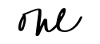

Store, send, create.
Keep - a new startup that needs our help to design a SaaS (Software as a Service) web application which allows people to collect information and store it in a single place. A person can create simple documents, store images, links to websites, and collaborate with others. It is our job to help focus on the needs of the user to meet their goals while making sure we meet the objectives and requirements of this project. Goals that include, easy navigation, making sure it is user friendly, and designing a web application that is visually minimal, but still beautiful to look at. Structure, layout, and visual design played a huge part in creating this successful web application.
Problem
Not having a space where users can easily save notes, links, and upload images.
Solution
Creating a web application where users can easily save content and share with others. Also, making it easy to use, convenient, and can be accessed anywhere.

Researching phase
The process for that was to create a survey to see what users are using the internet for, how do they save photos, links, etc when they are browsing the web. What devices they are using.
After the survey, I did a competitive analysis to see how different companies position themselves, who their primary audience is, what user groups they are targeting, and what their key differentiators and features are.
Personas
Who are the users? That is where the user personas come in. I wanted to see what their current behaviors were and how Keep would fit into their daily life. In order to do that I needed to find out more information such as their home and work life and what their habits are on the internet.


- A medium where he can use anytime whenever he gets inspired
- A mood board he can use digitally
- To save images and media on any device
- An app where he can save all his notes, photo and media
- Staying organized
- Can easily be shared with his co-workers and management
- To communicate with vendors and clients in a professional and simple way
- A more organized way to show all her clients up to date ideas
- Something to save all her ideas in one outlet
- A more organized way to show all her clients up to date ideas

Creating the user flow

Wireframes

Mockups + prototype
I used invision to see the exactly how the design would flow. I was able to use invision to create user tests and see how different people would navigate Keep. From the homepage, the user would click to the sign up button or sign in button, or any of the COA buttons to navigate to the dashboard. From there the user can create notes, links, or upload images. The user also has to option to change settings. From the setting account, they can upgrade, or change their information. After watching a couple of users, I realized exactly where the user like to click, where they gravitate to, and if they truly understand how the website works.

keep mockups
keep prototype video

Conclusion
In conclusion, I received some great feedback to make Keep a user friendly, simply web application for anyone to use. Some ideas worked, while some ideas did not. I learned that it’s important to listen to what the users want and need, rather than listening to what I want. It’s important to do all the testing and research to really understand what people want. When I tested my clickable prototype, it was really amazing to watch people who are in the industry who uses the web on a daily basis, compared to those who only use the internet for leisure. Both groups gave me ideas on how to better the website for anyone and everyone. While, the people who are in the industry wanted more options, like collaborations, it allowed me to learn what is needed to attract the more advanced users. I definitely had doubts about this project because I wasn’t sure how to approach something like this. I really needed to learn who the users are, what they want, what is most important, how to make a user friendly flow, and on top of all that, design. But in the end I learned so much. I can definitely use this information for all of my future projects.